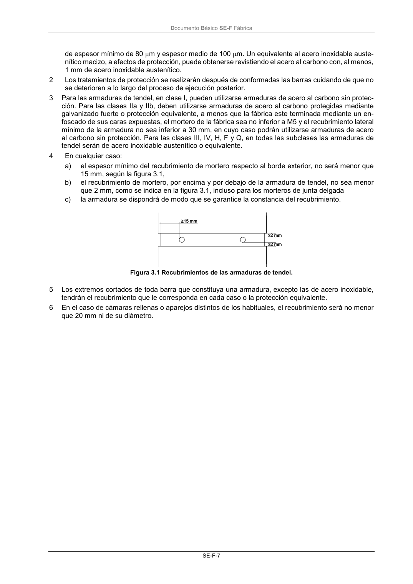

DB-SE-F · 3.3 Armaduras · versión 2019-12-20 · capa oficial
Formatos: JSON compacto · Markdown · PDF fuente
Ámbito del documento · texto del ámbito · documento y tablas
ID técnico a0030 · PDF pág. 10-13 · jerarquía no validada por persona · contrastado con el literal de la página 10 (candidato tipográfico); no validado por persona · padre: a0027
3.3 Armaduras 1 Con acero galvanizado, o en clases III, IV o Q con cualquier subclase con acero inoxidable austení- tico, basta un recubrimiento mínimo de 15 mm. Por galvanizado se entiende el de una capa de al menos 900 g/m2 de cinc. Una protección equivalente es una capa de cinc de 60 g/m2 y capa de epoxi Documento Básico SE-F Fábrica SE-F-7 de espesor mínimo de 80 m y espesor medio de 100 m. Un equivalente al acero inoxidable auste- nítico macizo, a efectos de protección, puede obtenerse revistiendo el acero al carbono con, al menos, 1 mm de acero inoxidable austenítico. 2 Los tratamientos de protección se realizarán después de conformadas las barras cuidando de que no se deterioren a lo largo del proceso de ejecución posterior. 3 Para las armaduras de tendel, en clase I, pueden utilizarse armaduras de acero al carbono sin protec- ción. Para las clases IIa y IIb, deben utilizarse armaduras de acero al carbono protegidas mediante galvanizado fuerte o protección equivalente, a menos que la fábrica este terminada mediante un en- foscado de sus caras expuestas, el mortero de la fábrica sea no inferior a M5 y el recubrimiento lateral mínimo de la armadura no sea inferior a 30 mm, en cuyo caso podrán utilizarse armaduras de acero al carbono sin protección. Para las clases III, IV, H, F y Q, en todas las subclases las armaduras de tendel serán de acero inoxidable austenítico o equivalente. 4 En cualquier caso: a) el espesor mínimo del recubrimiento de mortero respecto al borde exterior, no será menor que 15 mm, según la figura 3.1, b) el recubrimiento de mortero, por encima y por debajo de la armadura de tendel, no sea menor que 2 mm, como se indica en la figura 3.1, incluso para los morteros de junta delgada c) la armadura se dispondrá de modo que se garantice la constancia del recubrimiento. Figura 3.1 Recubrimientos de las armaduras de tendel. 5 Los extremos cortados de toda barra que constituya una armadura, excepto las de acero inoxidable, tendrán el recubrimiento que le corresponda en cada caso o la protección equivalente. 6 En el caso de cámaras rellenas o aparejos distintos de los habituales, el recubrimiento será no menor que 20 mm ni de su diámetro. Documento Básico SE-F Fábrica SE-F-9


PDF fuente redistribuible: copia fiel enlazada en esta página (SHA256 verificado).